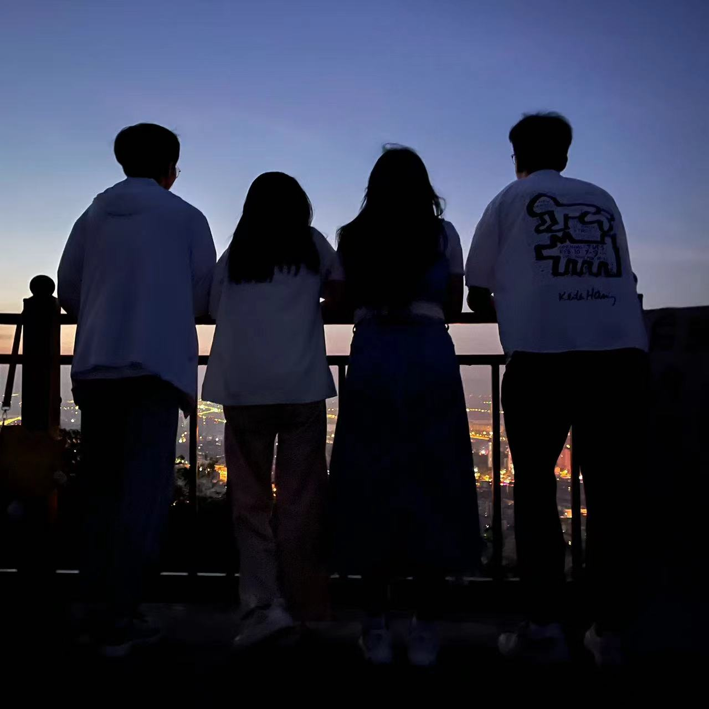

武汉黄鹤楼在我刚来武汉上学时，有幸去过一次黄鹤楼，那是疫情还没结束的时候，也是因为疫情，游玩的人很少。那时太阳依旧发挥着余威， 天气很热，甚至可以吃黄鹤楼联名的文创雪糕（当然就算不热也要吃的）。对我来说，这次黄鹤楼之行时在束缚的课堂悄悄飞出一只自由的小鸟。 >>> |
|---|
六安皖西大裂谷在我的好朋友们都快暑假结束准备返校时，我临时起意，“撺掇”大家去家附近的六安来一场一日游，因为距景点路途遥远，无奈只能去一个景点， 于是我们选择了皖西大裂谷，正值暑假期间，人很多，但是我们在这里领略了自然的奇妙，也给自己更多的可能，是一场“说走就走的旅行”。 虽然大家返程时都筋疲力尽，但是有可以和你一起做疯狂的事情的好朋友真的很快乐。 >>> |
长沙橘子洲头这是临近期末周，复习周的时候，我和同在武汉的高中好友策划了一次三天两夜的出行，先去长沙，再去凤凰古城。橘子洲头是我们从凤凰古城 回来后去的，逛完橘子洲头我们就乘坐晚上的火车回武昌了。我们去时是傍晚，凉风习习（虽然也不是很凉快的、人也不少），可以看见毛泽东 同志的雕塑，非常壮观。 >>> |
|

淮北相山高考结束后，我回来淮北，在一个傍晚我哥和我姐突然问我：“想不想爬山去看日出？”我点头应是。于是疯狂的一夜拉开了序幕：再三和姥姥强调此行 我没有危险后，我们四人终于踏上了旅程。晚上八点出门，我们在某商场吃过饭后休息了一阵（其实是找了个地方打麻将、当时我才刚刚学会）在凌晨三点 我们出发去山脚（带着麻将）开始了我们的夜爬之旅，因为山不是很高，所以很快就爬到顶了（大概四点半左右），在这里居然有很多“志同道合”的人 一起静静等待日出。山上的风很大，吹着很凉快，在山顶，我俯视这座城市，感叹城市的烟火，随着人越来越多，天也渐渐亮起来了，一开始太阳害羞 ，用云遮面，我以为等不到日出要遗憾离场时，太阳仿佛听到了我的心声，不再躲藏。我再一次感叹宇宙的奥妙！ >>> |
日照万平口是在大一的暑假，我们（我、姥姥、两个哥哥、姐姐）自驾去日照旅游，我们在这里吃了海鲜，去赶海（姥姥因为年龄比较大体力不支没有去），在海边 看了日出（又是一个阴天转晴），去了科技馆。万平口是我们第一天去的地方，对于一个内陆人来说，对海的向往是非常强烈的，那是我第一次见到海，大海！那么辽阔！那么 包容！那么蓝，那么神秘！当即我们就脱掉鞋子下去感受了，姥姥还捡了许多小石头和小贝壳（我现在还留着）！ PS：图片是我和姥姥的合照（我和我的小老太太） >>> |
湘西凤凰古城凤凰古城这个地方，虽然商业化很严重，但是的确，不可否认的是，这里的景色美得像画，我和我的好朋友在这里穿着苗族服饰拍了照片（个人图集板块下面 滚动的最后那两张），当然，虽然天气很热，人也很多，我们汗流浃背，但是酣畅淋漓。在这么美丽的地方，对于期末周的我来说是一种心灵的净化与洗涤。 顺便说一句，很有意思的苗语，当时导游教了一句“弄你”是吃饭的意思，“弄死你”的吃饱饭的意思（仅为音译，与语义无关）。 >>> |
天水伏羲庙
天水前段时间非常火爆，为了尝一尝正宗的天水麻辣烫，我决定“挂帅亲征”，五一期间亲自去一趟天水。“青春没有售价，硬坐直达天水”，历经15小时对我屁股
的折磨，我终于是抵达天水这个美丽的城市，在这里发现了宝藏饮料————杏皮水！去了伏羲庙，这里景色也很不错，不过伏羲庙里面是一个博物馆，里面存放了历代的钱币等等。天水是非常有文化底蕴的一个城市！
>>>
|
合肥园博园合肥园博园于2023年国亲期间正式开放入园，我和好朋友们就是在开园的第三天去的，非常非常大！不愧是全国最大的公园，走的我特别累......一整天走下来 感觉双脚都不是我自己的了。体力不好的慎在旺季去，因为你又抢不到车又走得很累。但是里面的景色非常美！！感觉走那么累是值得的，一天是不可能逛完全 部的，我们逛了大部分，我觉得每一个园都将城市特色充分表现出来了！很值得去！ >>> |
萍乡武功山又是一次疯狂的经历，我和我的室友在凌晨一点从武昌乘坐火车去萍乡，我们在山上定了房间，需要先爬到距离山顶几百米的地方，于是我们走走停停，在下午 四点多抵达住宿的地方，期间认识了一个长沙的女生，于是一起爬到这里，由于她一个人不安全，选择和我们一起住在这里，休息了一会出去看日落，看完日落 就立刻去睡觉了，因为实在是筋疲力尽。第二天早上我们早早地收拾好，背上所有东西出发去金顶看日出（因为下山我们要走另一条路），又是阴转晴的一个情 节（感觉我总是遇到），不过真的很美，日出的震撼是一次又一次刷新的，永远不会有审美疲劳的时候。（下山我们坐的缆车，虽说是缆车，但依旧需要走很多 很多路程） >>> |
宜昌滨江公园我去宜昌是因为薛之谦在宜昌开演唱会，而我，买到了内场的门票（和好朋友一起），我是薛之谦的歌迷，我非常喜欢他，大概已经有八年了，快到九年了，他是 一个非常具有人格魅力的歌手，很幽默，很有趣。那天很热，我全身大汗，但是沉浸在巨大的喜悦之中！滨江公园临三峡的景色很美，为什么没有贴三峡呢，因为 时间太赶，路途遥远，时间上来不及，不过在这里品尝到了特色饮品————凉虾（你没看错，是饮品）。宜昌————宜人之地，昌盛之城。 >>> |